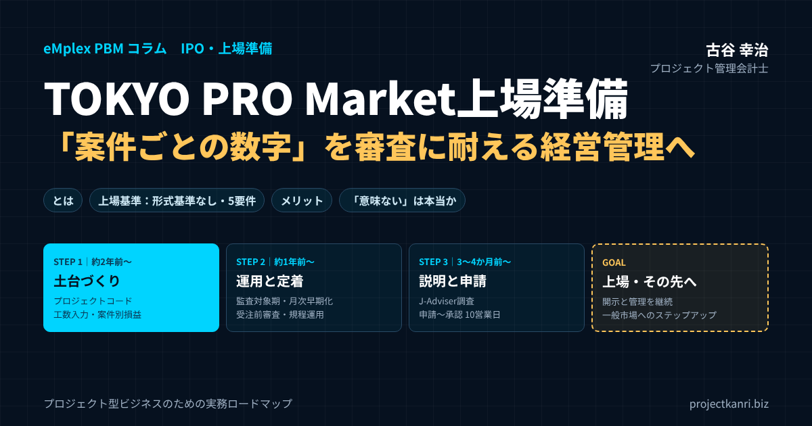

プロジェクト型ビジネスのためのTOKYO PRO Market上場準備―「案件ごとの数字」を審査に耐える経営管理へ変える実務ロードマップ

結論：TOKYO PRO Market上場準備の本丸は「プロジェクト単位の数字の信頼性」です
最初に結論を申し上げます。建設、システム開発、コンサルティング、映像制作といったプロジェクト型ビジネスがTOKYO PRO Market（以下、TPM）への上場を目指すとき、準備の成否を分けるのは、会社全体の決算書をきれいに整えることではありません。「一件一件のプロジェクトについて、売上・原価・工数・進捗・見込みを、誰が見ても同じ結論になる形で説明できるかどうか」です。
この記事の要点
- TOKYO PRO Marketとは：東京証券取引所が運営する、特定投資家（プロ投資家）向けの株式市場。2026年9月末時点で189社が上場
- 上場基準：利益・時価総額・株主数などの形式基準はなく、J-Adviserが5つの上場適格性要件（実質基準）を調査。監査証明は直前1年間
- メリット：信用力・採用力の向上、オーナーシップを保ったままの上場、経営管理の仕組み化、一般市場へのステップアップ
- 「意味ない」と言われる理由：流動性が低く、上場時の資金調達はまれ。年間の維持コストも発生する。目的次第で評価は大きく変わる
- 上場準備の本丸：プロジェクト型ビジネスでは、案件ごとの売上・原価・工数・見込みを仕組みで説明できること
TPMは売上や利益、株主数、時価総額といった数値の形式基準が設けられていない市場です。だからこそ審査の目は、会社の実態、つまり「この会社の数字は信頼できるのか」「この会社は自分の事業をコントロールできているのか」という実質面に集中します。そしてプロジェクト型ビジネスの場合、会社の数字はプロジェクトの数字の積み上げでしかありません。案件ごとの採算が曖昧な会社は、全社の損益も、事業計画も、実は説明できていないのです。
逆に言えば、プロジェクト別の管理会計がきちんと回っている会社は、TPM上場準備の半分以上をすでに終えているとも言えます。本稿では、この「プロジェクト単位の数字の信頼性」を軸に、TPM上場準備を実務的に進める道筋をお伝えします。
実際、私が以前ご相談を受けた年商30億円規模のシステム開発会社では、全社の決算は毎期黒字で、経営者も「うちは数字はしっかりしている」と自信を持っていました。ところが上場準備の初期診断でプロジェクト別の損益を洗い出してみると、全体の約2割の案件が赤字で、その赤字を一部の高収益案件が穴埋めしている構造であることがわかりました。しかも赤字案件の多くは、完了間際になって初めて赤字が判明していたのです。全社の数字が黒字であることと、事業をコントロールできていることは、まったく別の話です。TPMの準備とは、この二つの距離を埋める作業だと言い換えてもよいでしょう。
本稿の前半では、TOKYO PRO Marketとは何か、上場基準、メリット、そして「TOKYO PRO Market上場は意味ない」という声にどう向き合うべきかを整理します。後半では、上場までの流れと費用・期間を確認したうえで、J-Adviserが何を見ているのか、プロジェクト型ビジネスがTOKYO PRO Market上場準備をどこから始めればよいのかを、実務のロードマップとしてお伝えします。最後に、よくいただく質問をFAQにまとめました。
TOKYO PRO Marketとは：意味・特徴と一般市場との違い
TPMは東京証券取引所が運営する、株式の売買を特定投資家（いわゆるプロ投資家）に限定した市場です。一般市場であるプライム・スタンダード・グロースとの大きな違いは、上場の可否を判断する主体と基準にあります。一般市場では主幹事証券会社の引受審査と取引所の上場審査を経ますが、TPMでは取引所から資格を認められた「J-Adviser」が、上場適格性の調査・確認を担い、上場後も継続的に指導・助言を行います。
TOKYO PRO Marketの意味を一言で言えば、「プロの投資家だけが売買に参加することを前提に、上場の数値基準を取り払い、そのかわりに専門家であるJ-Adviserが企業を見極める市場」です。歴史をたどると、2009年にロンドン証券取引所との共同で開設されたTOKYO AIMを前身とし、2012年7月から東京証券取引所が単独で運営しています。J-Adviserの仕組みは、ロンドンのAIM市場のNomad（指名アドバイザー）制度を参考にしたものです。
| 項目 | TOKYO PRO Market | 一般市場（グロース・スタンダード等） |
|---|---|---|
| 投資家 | 特定投資家等（いわゆるプロ投資家） | 一般投資家を含むすべての投資家 |
| 形式基準（数値基準） | なし（株主数・流通株式・利益などの基準がない） | あり（株主数、流通株式、時価総額など） |
| 審査の主体 | J-Adviser（東証が資格を認めた指定アドバイザー） | 主幹事証券会社の引受審査と取引所の上場審査 |
| 上場前の監査期間 | 最近1年間 | 最近2年間 |
| 申請から上場承認まで | 10営業日 | 取引所の上場審査に数か月程度 |
| 内部統制報告書 | 任意 | 必要（J-SOX） |
| 四半期開示（決算短信） | 任意 | 必要 |
| 開示言語 | 日本語または英語 | 日本語（プライム市場では英文開示も求められる） |
※出典：日本取引所グループ「TOKYO PRO Market 概要」ほか。一般市場の審査期間は一般的な目安。
近年、TOKYO PRO Marketの存在感は急速に高まっています。新規上場は2024年に50社、2025年に46社と高い水準が続き、2025年には新規上場社数で初めてグロース市場（41社）を上回りました。2026年も9月末時点で36社が新規上場し、上場会社数は189社に達しています。中堅・中小企業や地方企業にとって、上場の現実的な選択肢になったと言ってよいでしょう。
プロジェクト型ビジネスの経営者の方には、TPMの上場審査を「会社の健康診断を、専門家に一定期間かけて受けること」とイメージしていただくとわかりやすいと思います。健康診断で見られるのは、見た目の体格ではなく、血液や内臓といった体の中の状態です。同じように、TPMで見られるのは売上規模や利益額の大きさではなく、その数字を生み出している業務と管理の仕組みの状態なのです。
ただし「形式基準がない」ことを「審査が甘い」と誤解してはいけません。公募による資金調達や株主数の要件がない分、J-Adviserは企業の継続性、経営の健全性、内部管理体制、開示の適正性といった実質面を丁寧に確認します。一般市場で求められる内部統制報告制度（いわゆるJ-SOX）の適用はありませんが、それは「内部統制が不要」という意味ではなく、「会社の規模に見合った実効的な仕組みを、自分たちで設計して説明せよ」という意味だと私は受け止めています。
上場後の義務についても、準備段階から理解しておくことが大切です。TPM上場会社は、有価証券報告書ではなく「発行者情報」を年に一度、さらに半期ごとの情報を開示し、重要な事実が発生した際には適時開示を行います。開示は日本語だけでなく英語でも可能です。また、J-Adviserとの契約は上場後も継続し、その報酬や監査報酬、開示対応の人件費など、上場を維持するためのコストが毎年発生します。上場はスタートラインにすぎず、「上場会社としての経営管理を毎月・毎期続けられる体制かどうか」が問われているのだと理解しておくと、準備の優先順位を誤らずに済みます。
TOKYO PRO Marketの上場基準：形式基準はなく、5つの上場適格性要件で判断
TOKYO PRO Marketの上場基準で最も特徴的なのは、一般市場にある形式基準、つまり株主数、流通株式、時価総額、利益の額といった数値の基準が設けられていないことです。赤字の会社でも、売上が数億円規模の会社でも、上場そのものは可能です。その代わりに、J-Adviserが「上場適格性要件」と呼ばれる5つの実質基準に照らして、企業を調査・確認します。
5つの要件は、東京証券取引所の規則で次のように定められています。第一に「当取引所の市場の評価を害さず、当取引所に相応しい会社であること」、第二に「事業を公正かつ忠実に遂行していること」、第三に「コーポレート・ガバナンス及び内部管理体制が、企業の規模や成熟度等に応じて整備され、適切に機能していること」、第四に「企業内容、リスク情報等の開示を適切に行い、開示義務を履行できる態勢を整備していること」、第五に「反社会的勢力との関係を有しないことその他公益または投資者保護の観点から必要と認める事項」です。
| 要件 | 規定の趣旨 | プロジェクト型ビジネスで問われること |
|---|---|---|
| ① 市場の評価を害さず相応しい会社 | 業績・財政状態の把握、予算統制、運転資金の確保など | 案件別の採算と受注残から業績を説明できるか。運転資金は入金サイトと外注支払の差も含めて把握しているか |
| ② 事業の公正・忠実な遂行 | 関連当事者取引による利益供与がないことなど | 社長や親族の会社との取引、特定元請への過度な依存がないか |
| ③ ガバナンスと内部管理体制 | 規模・成熟度に応じた体制の整備と運用 | 受注前審査、案件モニタリング、原価計算と収益認識のルールが運用されているか |
| ④ 開示の態勢 | 企業内容・リスク情報の適切な開示と開示義務の履行 | 月次で締まり、業績予想とその修正を判断できる数字が出るか |
| ⑤ 反社会的勢力との関係がないこと | 公益・投資者保護の観点 | 顧客・協力会社との新規取引開始時のチェックが承認フローに組み込まれているか |
※要件の文言は東京証券取引所の規則（TOKYO PRO Marketに関する特例）に基づく。右列は筆者の実務上の整理。
手続き面の上場基準として押さえておきたいのは、次の三点です。一つ目は、J-Adviserとの契約が必須であることです。J-Adviserは上場前の調査だけでなく、上場後も上場適格性の維持を継続的に確認し、指導・助言を行います。二つ目は、上場前の監査期間が最近1年間であることです。一般市場の2年間に比べて準備期間を短縮できますが、その1期分の財務諸表について、監査法人などによる監査証明を受ける必要があります。三つ目は、上場申請の前に意向表明の手続きがあり、申請から上場承認までは10営業日とされていることです。実質的な調査は申請前にJ-Adviserによって行われるため、申請の段階では準備がほぼ完了している必要があります。
ここで強調しておきたいのは、要件の第三にある「企業の規模や成熟度等に応じて」という一文です。TOKYO PRO Marketの上場基準は、大企業と同じ重厚な管理体制を求めているわけではありません。しかし、規模に応じた実効的な仕組みが整備され、実際に運用されていることは確実に求められます。プロジェクト型ビジネスにとっての「規模に応じた実効的な仕組み」とは何か。私は、その中心が案件別の採算管理だと考えています。
TOKYO PRO Marketのメリット：プロジェクト型ビジネスが選ぶ理由
私のもとには、ここ数年、プロジェクト型ビジネスの経営者からTPM上場の相談が明らかに増えています。背景には、この業態ならではの切実な事情があります。
第一に、採用です。プロジェクト型ビジネスの売上は、突き詰めれば「優秀な人材の稼働時間×単価」で決まります。人が採れなければ受注を断るしかない。上場企業という看板が、エンジニアや施工管理技士、プロデューサーといった専門人材の採用力を大きく引き上げるという声は、支援先から繰り返し聞いてきました。
第二に、取引上の信用です。大手企業や官公庁との取引、元請としての受注拡大を狙う場面では、与信審査や取引口座開設のハードルが常に存在します。上場によって開示と監査を受けている会社であることが、受注機会の拡大に直結するケースは少なくありません。
第三に、株主構成を大きく変えずに上場できることです。TPMは公募や売出しを必須としないため、オーナー経営者が経営権を維持したまま上場企業となる道が開かれています。事業承継やM&Aを見据えた「会社の値札づくり」としてTPMを活用する経営者もいます。
そして第四に、これが最も本質的だと考えていますが、上場準備そのものが「経営管理の仕組み化」の強力な推進力になることです。社長の頭の中にしかなかった案件の採算感覚を、会社の仕組みに移し替える。TPM上場は、そのための期限付きプロジェクトとして非常に有効なのです。
第五に、一般市場へのステップアップの足がかりになることです。TOKYO PRO Marketから東証スタンダード市場やグロース市場、地方取引所の市場へ移った会社は、2026年9月末時点で累計17社あります。まずTOKYO PRO Marketで上場会社としての開示と管理の経験を積み、数年後に一般市場を目指すという段階的な戦略は、プロジェクト型ビジネスのように管理体制の整備に時間がかかる業態にとって、現実的な選択肢です。
第六に、事業承継やM&Aでの活用です。上場会社として継続的に開示を行い、株価が付いていることは、会社の価値を第三者に示す一つの材料になります。後継者への承継や、将来の資本提携を考えている経営者にとって、TOKYO PRO Market上場は「会社を外から評価できる状態にしておく」ための手段にもなり得ます。
「TOKYO PRO Market上場は意味ない」は本当か：デメリットと向き合い方
インターネットで「TOKYO PRO Market 意味ない」と検索する方が少なくないように、TOKYO PRO Market上場には懐疑的な見方もあります。私は、その指摘には正しい部分と、目的を取り違えている部分の両方があると考えています。まず、デメリットを数字で正直に確認しておきましょう。
一つ目は流動性です。売買に参加できるのは特定投資家等に限られるため、株式の売買はほとんど行われません。上場会社の約9割は株主数が50人未満で、年間を通じて売買がほぼない会社も約9割にのぼるという調査もあります。二つ目は資金調達です。上場時に株式による資金調達を行った会社は、ごく一部（4％程度）にとどまるとされています。三つ目はコストです。上場準備に2,000万〜4,000万円程度、上場後の維持に年間1,500万〜2,500万円程度がかかるという試算があり、J-Adviserの報酬、監査報酬、開示対応の人件費などが毎年発生します。
これらのデメリットだけを見れば、「TOKYO PRO Market上場は意味ない」という声が出るのも理解できます。上場によって株式市場から大きな資金を集めたい、あるいは創業者の株式を市場で売却したいという目的であれば、TOKYO PRO Marketは向いていません。その目的なら、グロース市場などの一般市場を目指すか、ファンドからの調達や事業売却といった別の選択肢を比べるべきです。
一方で、TOKYO PRO Market上場の価値は、そもそも株式市場での売買にあるわけではありません。上場会社としての信用、採用力、そして上場準備を通じて手に入る経営管理の仕組みにあります。とりわけプロジェクト型ビジネスでは、人材の採用と元請・大手顧客からの信用が事業の成長を直接左右します。採用説明会で「上場会社です」と言えること、取引口座の開設や入札の場面で開示と監査を受けた会社であると示せること。こうした効果は、株価や売買高には表れませんが、事業の数字には確実に表れます。
もちろん、良いことばかりではありません。TPMは売買の担い手が特定投資家に限られるため、株式の流動性は一般市場に比べて限定的です。上場によって大きな資金調達を行うことを主目的とするなら、他の選択肢と比較検討すべきでしょう。また、先ほど触れた上場維持コストに加え、開示や決算の早期化に対応する管理部門の人材確保も必要になります。私は相談に来られる経営者に、「上場して何を実現したいのか」を必ず最初にお尋ねします。採用なのか、信用なのか、承継なのか、それとも経営管理の高度化なのか。目的がはっきりしていれば、準備の過程で迷ったときの判断軸になりますし、J-Adviserとの面談でも、上場の意義を自分の言葉で語れるようになります。
| 観点 | 意味が出やすい | 意味ないになりやすい |
|---|---|---|
| 上場の目的 | 採用・信用・承継・経営管理の高度化が目的 | 上場時の大型資金調達や株式の売却益が目的 |
| 上場後の活用 | 採用広報・営業・金融機関対応で「上場会社」を使い倒す | 上場したことで満足し、何も変えない |
| 管理体制 | 準備を機に案件別管理と月次決算を仕組み化する | J-Adviserと外部専門家に任せきりで社内に残らない |
| 将来の構想 | 一般市場へのステップアップやM&Aを描いている | 維持コストに見合う活用策がない |
私の結論は、「TOKYO PRO Market上場は、目的なく行えば意味がなく、目的をもって使い倒せば大きな意味がある」です。特に、上場準備の過程で整えた案件別の管理会計や月次決算の仕組みは、上場しなくても会社に残る資産です。上場を一つの期限付きプロジェクトとして、経営管理の水準を一段引き上げる。その意味で捉えれば、TOKYO PRO Market上場は意味ないどころか、プロジェクト型ビジネスにとって非常に効率のよい投資になり得ます。
TOKYO PRO Market上場までの流れと費用・期間
TOKYO PRO Market上場までの流れを、全体像として確認しておきます。準備期間の目安は概ね2年程度です。一般市場が3〜5年程度かかると言われるのに比べると短いものの、決して「すぐに上場できる市場」ではありません。
| フェーズ | 時期の目安 | 主な実施事項 |
|---|---|---|
| 準備検討期 | 上場予定の約2年前〜 | 上場目的の言語化、ショートレビュー（課題抽出）、J-Adviser・監査法人の候補選定、プロジェクトコードと工数入力の整備 |
| 体制整備期 | 上場予定の約1年前〜 | 監査対象期の開始、規程整備と運用、取締役会の定例化、月次決算の早期化、受注前審査・案件モニタリングの運用 |
| 上場申請期 | 上場予定の約3〜4か月前〜 | J-Adviserによる調査、発行者情報などの開示書類の作成、意向表明、上場申請（承認まで10営業日） |
| 上場後 | 毎期・毎半期 | 発行者情報・半期の開示、適時開示、J-Adviserによる継続的な確認、一般市場へのステップアップの検討 |
※期間は会社の状況により大きく異なります。費用は準備2,000万〜4,000万円、維持は年間1,500万〜2,500万円程度という試算があります（FinanScope調べ）。
TPM上場までの期間は会社の状況によって大きく異なりますが、私の支援経験では、本格的な準備着手から上場まで概ね1年半〜2年程度を見ておくのが現実的です。管理体制の整備に半年から1年、監査法人による監査を受ける期間、そしてJ-Adviserによる調査と申請手続きという流れになります。一般市場では直前2期分の監査証明が求められるのに対し、TPMでは直近1期分で申請できる点は時間的に有利ですが、その1期の決算数字を監査に耐える精度で締められることが前提になります。
つまずきの典型は、監査法人の確保の遅れと、月次決算の早期化の遅れです。近年は監査法人側の受け入れ余力が逼迫しており、準備の初期段階から並行して探し始めなければ、スケジュール全体が後ろ倒しになります。また、プロジェクト別の原価集計が手作業に依存している会社では、月次決算が翌月20日を過ぎても締まらず、経営会議で使える数字が出てこないという状態に陥りがちです。
パートナー選びについても触れておきます。J-Adviserは、TPM上場の成否を左右する最も重要なパートナーです。候補を比較する際には、報酬体系だけでなく、自社の業種、とりわけプロジェクト型ビジネスの会計処理や事業構造への理解があるか、上場後の継続的な助言をどのような体制で行うのかを確認してください。監査法人についても同様で、収益認識や原価計算といったプロジェクト型ビジネス特有の論点に経験のあるチームかどうかで、準備の負荷は大きく変わります。
費用については、表の注記に示した試算のとおり、上場準備と上場維持の両方を予算に織り込んでおく必要があります。金額の多寡よりも大切なのは、その費用を上場の目的に照らして「投資」として説明できることです。採用コストの削減、受注単価や取引条件の改善、管理部門の生産性向上など、上場によって得たい効果を数字で置いてみると、経営陣の意思決定がしやすくなります。
J-Adviserは何を見ているのか―プロジェクト型企業が突かれやすい5つの論点
J-Adviserによる調査では、事業内容、経営陣、ガバナンス、財務、内部管理など広範な項目が確認されます。その中でプロジェクト型ビジネスが特に質問を受けやすい論点を、私の支援経験から5つに絞ってご紹介します。
一つ目は収益認識です。一定期間にわたり履行義務を充足する契約について、進捗度をどう見積もっているのか。原価比例法を採用するなら、見積総原価の算定根拠と、その見直しのプロセスが問われます。二つ目は原価の集計と配賦です。労務費や外注費が正しくプロジェクトに紐づいているか、共通費や間接費をどのような基準で配賦しているか、その基準は合理的で継続的か。三つ目は仕掛品と損失の認識です。未成工事支出金や仕掛品に、本来は費用処理すべき原価が滞留していないか。赤字が見込まれる案件について、受注損失引当金や工事損失引当金を適時に計上する仕組みがあるか。
四つ目は予算と実績の管理です。事業計画の売上・利益が、どの案件の受注見込みの積み上げで構成されているのかを説明できるか。予実差異が出たとき、その原因を案件単位で分析し、次の計画に反映しているか。五つ目は受注の属人性と取引先の集中です。特定の営業担当者や社長個人の人脈に受注が依存していないか、売上の大半を特定顧客が占めていないか。これは事業の継続性そのものに関わる論点です。
このほか、取引先の反社会的勢力チェックの体制も、上場会社として当然に求められる事項です。プロジェクト型ビジネスでは、案件ごとに新しい顧客や協力会社との取引が発生するため、取引開始時のチェックを受注・発注の承認フローに組み込んでおくことが現実的です。
お気づきのとおり、五つの論点はいずれも「プロジェクトごとの数字が、仕組みとして正しく記録され、判断に使われているか」という一点に収れんします。
実際の調査の場では、「この案件の見積総原価は、受注後に何回、誰の承認で見直しましたか」「期末時点の仕掛品のうち、1年以上動いていない案件はありますか」「前期の予算と実績の差異の主因は何で、今期の計画にどう反映しましたか」といった、非常に具体的な質問が投げかけられます。経理部門だけで答えられる質問はほとんどなく、プロジェクト責任者や営業責任者の協力が不可欠です。ここで回答に窮する会社の多くは、担当者の能力の問題ではなく、そもそも情報が記録として残る仕組みになっていないことが原因です。質問への回答を準備するのではなく、質問されたときに記録を見せれば済む状態をつくる。それが上場準備の本当の目標です。
TOKYO PRO Market上場準備の第一歩：プロジェクトコードと工数・原価の「一気通貫」
では、どこから手をつければよいのか。私が支援先で必ず最初に確認するのは、「受注から請求までのすべての取引が、同じプロジェクトコードで追いかけられるか」という点です。
見積書、受注、発注、外注先からの請求、社員の工数入力、経費精算、売上計上。これらがそれぞれ別のシステムや別のExcelで、別の案件番号によって管理されている会社は驚くほど多いものです。こうした状態では、月末に経理担当者が手作業で突き合わせてプロジェクト別損益を作ることになり、締めは遅れ、数字の正確性も担保できません。J-Adviserや監査法人から「この案件の原価の内訳を見せてください」と言われたとき、根拠資料をすぐに出せないのは致命的です。
外注先の管理も見落とせません。プロジェクト型ビジネスでは、協力会社やフリーランスへの外注費が原価の大きな割合を占めることが多く、発注書のないまま作業が始まる、請求書が届いて初めて原価が判明する、といった運用は珍しくありません。発注の段階でプロジェクトコードと金額を確定させ、検収をもって原価を計上する流れにしておけば、原価の計上漏れや期ずれを防げますし、取引先との契約関係も明確になります。これは下請法やフリーランス新法への対応という観点からも重要です。
特に重要なのがタイムシート、つまり工数の記録です。プロジェクト型ビジネスの原価の大部分は人件費であり、その配賦の根拠は工数しかありません。工数入力が月末にまとめて記憶で入力されている、あるいは入力率が低く一部の社員の工数が欠けている、といった状態では、原価計算の信頼性そのものが揺らぎます。まずは日次または週次での入力を定着させ、入力漏れを管理者が確認し、承認する流れを作ることです。
この「一気通貫」の土台ができれば、プロジェクト別の原価、粗利、進捗度が自動的に見えるようになり、収益認識や損失引当の判断も、根拠のある数字に基づいて行えるようになります。上場準備で求められる多くの資料は、この土台の上に自然と積み上がっていきます。
私が支援先で進める手順は、大きく三段階です。第一段階では、プロジェクトコードの採番ルールを決め、見積から請求まですべての帳票にコードを記載することを徹底します。第二段階では、工数入力を日次または週次で定着させ、外注費や経費もコード単位で計上する流れを整えます。第三段階で、月次でプロジェクト別損益を作成し、経営会議で案件ごとの粗利と進捗をレビューする場を設けます。ある映像制作会社では、この三段階に約半年をかけました。当初は現場から「入力が面倒だ」という声が上がりましたが、自分の担当作品の採算が毎月見えるようになると、プロデューサー自らが原価の使い方を工夫し始め、半年後には全社の粗利率が数ポイント改善しました。上場準備のための仕組みが、そのまま収益改善の仕組みになった好例です。
事業計画の説明力を、プロジェクト別フォーキャストで担保する
上場準備では、中期の事業計画と、それを支える単年度予算の説明が求められます。プロジェクト型ビジネスの計画づくりで私がよく目にする失敗は、「前年売上×成長率」というトップダウンの数字だけで計画を作ってしまうことです。これでは、なぜその売上が達成できるのかを説明できません。
説得力のある計画は、受注済み案件（バックログ）、受注確度の高い見込み案件、そして過去実績から推計する新規受注の三層で組み立てます。受注済み案件については、進捗予定に沿った売上計上時期と原価の見込みを示す。見込み案件については、確度のランク分けと、その評価基準を明確にする。新規受注の部分は、営業パイプラインの転換率や平均案件規模といった実績値から推計する。こうすることで、計画の各数字に「根拠となる案件リスト」が紐づきます。
さらに大切なのが、毎月の見込み更新、つまりフォーキャストです。予算を立てて終わりではなく、各案件の進捗と着地見込みを毎月更新し、期末の着地予想を経営会議で共有する。上場後は業績予想の開示と、その修正の要否判断が求められますが、その精度は日々のフォーキャストの精度でほぼ決まります。予算と実績の乖離が大きい会社は、審査の場で「この会社は自社の業績をコントロールできていないのではないか」という疑念を持たれてしまいます。
フォーキャストの運用で私が重視している指標は、受注残高、案件別の粗利率、そして人員の稼働率の三つです。受注残高は将来売上の確度を示し、粗利率の推移は見積精度と実行管理の良し悪しを示し、稼働率は人という供給能力に対して受注が過不足ないかを示します。この三つを毎月同じ形式で経営会議に出し続けるだけで、経営陣の会話は「今月いくら売れたか」から「この先の数字をどう作るか」へと変わっていきます。目安として、四半期単位の着地見込みと実績の差が、売上高の数パーセント程度に収まるようになれば、上場後の業績予想にも一定の自信を持てる水準だと私は考えています。そこに至るまでには通常、数四半期分の試行錯誤が必要ですから、上場準備の早い段階から運用を始めることが肝要です。
もう一つ見落とされがちなのが、人員計画との整合性です。プロジェクト型ビジネスでは、売上計画を達成するために必要な稼働時間が、在籍人員と採用計画でまかなえるのかを必ず検証しなければなりません。売上は毎年2割伸ばす計画なのに、人員はほとんど増えない。そうした計画は、単価の大幅な上昇か外注の拡大がない限り成り立ちません。売上計画、人員計画、外注計画、そして粗利率の前提が一本の線でつながっていることを示せれば、事業計画の説得力は大きく高まります。
内部統制とガバナンスは「身の丈で、しかし実効的に」
TPMにはJ-SOXの適用がないとはいえ、上場会社として最低限整えるべき内部管理体制は当然あります。ここで気をつけたいのは、一般市場向けの重厚な規程集やフローチャートをそのまま持ち込んで、現場が回らなくなることです。大事なのは、自社のリスクがどこにあるかを見極め、そこに的を絞って実効的な統制を置くことです。
プロジェクト型ビジネスで最もリスクが集中するのは、受注の入口です。見積の段階で原価の見積根拠と想定粗利率を記録し、一定の金額や粗利率を下回る案件は上位者の承認を必須にする。受注時には契約条件、特に検収条件や支払条件、追加費用の扱いを確認する。この「受注前審査」の仕組みがあるだけで、赤字案件の発生率は大きく下がります。
次に、実行中の案件のモニタリングです。原価の消化率と進捗率の乖離が一定の水準を超えたら、自動的にアラートが上がり、責任者が経営会議に報告する。赤字化が見込まれる案件は、隠さずに早期にエスカレーションされる文化と仕組みが必要です。赤字案件の報告が遅れる会社では、損失引当の計上も遅れ、決算の信頼性が損なわれます。
ガバナンス面では、取締役会の定期開催と議事録の整備、職務権限規程による決裁ルートの明確化、そしてオーナー企業にありがちな関連当事者取引の整理が欠かせません。社長個人や親族の会社との取引は、必要性と取引条件の妥当性を説明できるようにしておくか、上場前に解消しておくことを強くお勧めします。
規程類についても、最初から数十本をそろえる必要はありません。まずは取締役会規程、職務権限規程、経理規程、原価計算規程、そして受注・契約管理に関する規程など、プロジェクト型ビジネスの業務の根幹に関わるものを優先し、実際の運用と一致させることが重要です。規程に書いてあることと現場のやり方が違えば、それ自体が指摘事項になります。また、社長直轄で独立した立場から業務をチェックする内部監査の機能も必要です。専任者を置くのが難しい規模であれば、他部門の担当者を兼務で任命したり、外部の専門家に委託したりする方法もあります。大切なのは、統制の仕組みが紙の上に存在するだけでなく、記録として運用の痕跡が残っていることです。
加えて、プロジェクト型ビジネスで必ず確認されるのが労務管理です。納期前の長時間労働や、未払い残業代の有無は、上場審査において重要な論点になります。ここで効いてくるのが、勤怠記録と工数記録の整合性です。勤怠上の労働時間より工数の合計が大幅に多い、あるいは少ないといったずれは、どちらかの記録が実態を反映していないことを示唆します。工数管理を整えることは、原価計算の精度を上げるだけでなく、労務リスクを可視化し、適正な働き方を担保する仕組みにもなるのです。
TOKYO PRO Market上場準備の実務ロードマップ：半年ごとの進め方
時間軸で整理すると、準備の最初の半年は「現状把握と土台づくり」の期間です。プロジェクトコード体系と工数入力、月次のプロジェクト別損益の作成を立ち上げ、並行して監査法人とJ-Adviserの候補と接触を始めます。次の半年から1年は「運用と定着」の期間で、規程の整備、受注前審査や案件モニタリングの運用、取締役会の定例化、月次決算の早期化を進め、その記録を積み上げていきます。最後の数か月は「説明と申請」の期間であり、監査を受けた決算数字と、運用実績の記録をもとに、J-Adviserの調査に答えていきます。どの段階でも、プロジェクト別の数字が仕組みとして出てくるかどうかが進捗を左右します。
私自身、エンプレックス（現SCSK）でCFOを務めていた頃、上場企業グループの一員として、プロジェクト別の数字を毎月短期間で締め、説明責任を果たすことの重みを日々感じていました。ホリプロの経営企画では、作品や公演という性格の異なるプロジェクトを横並びで評価する難しさも経験しました。そして何より、新卒で入社した朋友建設で和議という局面に立ち会った経験が、私の原点にあります。現場は忙しく働いていたのに、案件ごとの採算の実態が経営に見えていなかった。数字が見えないまま拡大することの怖さは、今も私の仕事の根底にある問題意識です。
TOKYO PRO Marketのよくある質問（FAQ）
Q. TOKYO PRO Marketとは何ですか？
A. 東京証券取引所が運営する、特定投資家等（いわゆるプロ投資家）向けの株式市場です。株主数や利益などの形式基準がなく、東証が資格を認めたJ-Adviserが上場適格性を調査・確認します。2026年9月末時点で189社が上場しています。
Q. TOKYO PRO Marketの上場基準は？
A. 数値の形式基準はなく、①市場の評価を害さず相応しい会社であること、②事業を公正かつ忠実に遂行していること、③規模に応じたガバナンスと内部管理体制、④適切な開示の態勢、⑤反社会的勢力との関係がないこと、の5つの上場適格性要件で判断されます。J-Adviserとの契約と、最近1年間の監査証明が必要です。
Q. TOKYO PRO Market上場のメリットは？
A. 社会的信用と採用力の向上、オーナーシップを保ったままの上場、上場準備を通じた経営管理の仕組み化、一般市場へのステップアップの足がかり、事業承継やM&Aでの活用などが挙げられます。
Q. TOKYO PRO Market上場は意味ないと言われるのはなぜですか？
A. 売買がプロ投資家に限られ流動性が低いこと、上場時の資金調達がまれであること、年間の上場維持コストがかかることが主な理由です。資金調達や株式売却が目的なら向きませんが、信用・採用・経営管理の高度化を目的とする会社には意味があります。
Q. TOKYO PRO Market上場までの期間と費用は？
A. 準備期間は概ね2年程度が目安で、申請から上場承認までは10営業日です。費用は上場準備に2,000万〜4,000万円程度、上場後の維持に年間1,500万〜2,500万円程度という試算があります。
Q. TOKYO PRO Market上場準備は何から始めればよいですか？
A. 上場の目的を経営陣で言語化し、J-Adviserと監査法人の候補を探すことと並行して、社内ではプロジェクトコードで受注から請求までを一気通貫に管理し、工数入力と月次のプロジェクト別損益を整えることから始めるのが実務的です。
Q. TOKYO PRO Marketから一般市場へ移れますか？
A. 可能です。2026年9月末時点で、東証スタンダード市場やグロース市場、地方取引所の市場へ移った会社は累計17社あります。移行時には内部統制報告制度への対応など、一般市場の基準を満たす必要があります。
まとめ：TOKYO PRO Marketはゴールではなく「経営管理を実装する期間」です
TPMは形式基準がない分、「自社の事業を数字で説明できるか」がストレートに問われる市場です。プロジェクト型ビジネスにとってそれは、プロジェクトコードで取引を一気通貫に管理し、工数と原価を正しく集計し、案件別の採算とフォーキャストを経営判断に使う仕組みを持つことにほかなりません。こうした仕組みは、上場審査のためだけのものではなく、上場後の業績予想や開示、さらにスタンダード市場など一般市場へのステップアップを目指す際の土台にもなります。
明日から着手できることとして、私は三つをお勧めしています。一つ目は、直近1年間に完了した案件をすべて一覧にし、受注時の見積粗利と完了時の実績粗利を並べてみることです。その差の大きさが、今の管理体制の実力を正直に示してくれます。二つ目は、工数入力の実態を確認することです。誰が、いつ、どの粒度で入力しているのかを見れば、原価計算の信頼性がおおよそわかります。三つ目は、上場の目的を経営陣で言語化し、共有することです。この三つを押さえるだけでも、TPM上場準備の見通しは格段に立てやすくなります。
なお、TPM上場後に一般市場へのステップアップを視野に入れる場合には、内部統制報告制度への対応や、より厳格な開示体制が求められることになります。TPMの段階でプロジェクト別管理の仕組みを確立しておけば、その移行はずっと滑らかになります。TPMから次の市場へ向かう戦略については、本コラムの関連記事でも詳しく取り上げていますので、あわせてご覧ください。
私たちが提供している「eMplex PBM」は、プロジェクト別の工数・原価・収支と着地見込みを一つの基盤で管理するためのサービスです。上場準備の過程で求められる案件別の根拠資料や、月次の予実管理を仕組みとして回したいとお考えの企業に、選択肢の一つとしてご検討いただければと思います。
上場準備は、会社が「社長の勘で動く組織」から「仕組みで動く組織」へと生まれ変わる、またとない機会です。TPMを単なる看板としてではなく、経営管理を実装するための期限付きプロジェクトとして活用していただきたい。それが、数多くのプロジェクト型企業の数字と向き合ってきた私からのメッセージです。